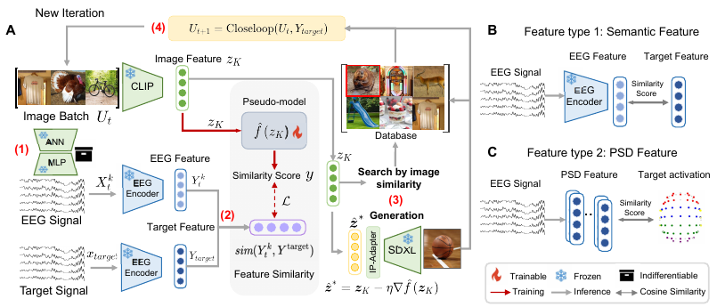
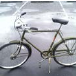
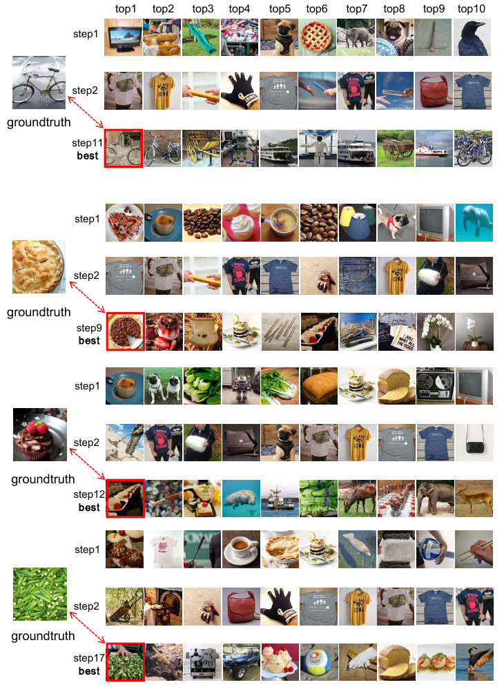
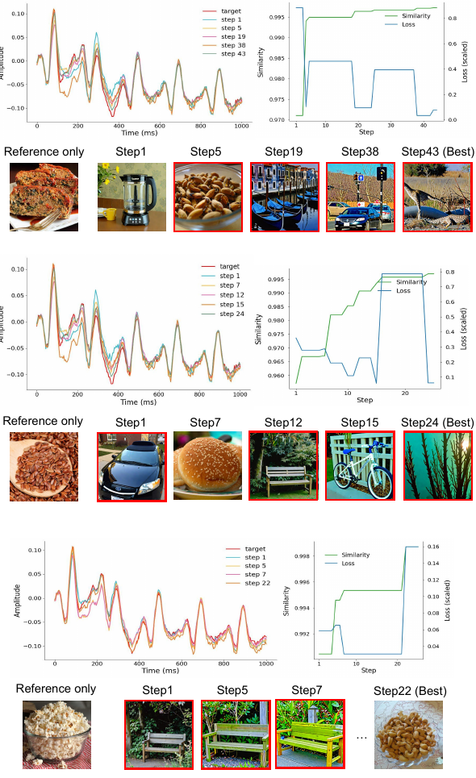

MindPilot asks a wild but simple question: can an artificial intelligence system keep changing pictures until a person's brain signals move closer to a desired state?
The paper is about a feedback loop. Show someone a picture, record the tiny electrical wiggles from electrodes on the scalp, score whether those wiggles look closer to the desired brain pattern, then use that score to choose or generate the next picture.
🖼️ The system controls the pictures, not the brain directly.
📡 The brain replies with noisy scalp-electrode signals.
🎯 The system keeps pictures that seem to push the signal in the right direction.
Think of it like playing hot-and-cold while blindfolded. The system cannot see the person's exact thought. It only gets warmer/colder hints from the brain signal, then picks the next picture based on those hints.
The trick is treating the brain like a black box. The authors do not try to open the brain and calculate perfect instructions. They treat it like a vending machine with mysterious wiring: put in an image, get out a signal, learn from the signal, try again.
🧃 Input: a natural-looking image.
⚡ Output: a messy electrical response.
🧭 Goal: make future outputs more like the target response.
It is like adjusting a recipe by taste. You do not know the exact chemistry of the soup. You taste it, add salt, taste again, and slowly move toward the flavor you want.
The pictures are not just picked from a folder. MindPilot can also use an image-making model. Better-scoring pictures become parents for new pictures, so the next batch is not random mush - it is a guided remix of what seemed to work.
🧬 Good pictures pass along their "family traits."
🎨 The image generator makes new candidates.
🔁 The loop repeats until the system finds a better match.
Imagine a photographer taking many shots, showing you the best few, then making the next photos more like the ones that made your face light up. MindPilot does that, except the "face lighting up" is replaced by scalp-electrode signals or ratings.
The results are promising, but not magic. A lot of the testing uses a stand-in brain model trained from public data. The human study is small, and some people's signals were too messy for part of the analysis. The paper is saying "this might be possible," not "we can now program moods from across the room."
✅ It shows the loop can improve over repeated attempts.
🧪 It works best when the target is clear enough to score.
🧯 It still has noise, person-to-person differences, and speed problems.
This is more like the first clunky steering wheel for brain-guided image generation than a self-driving car. The wheel turns, but nobody should pretend the highway is solved.
TL;DR
MindPilot shows a possible recipe for making images that adapt to brain feedback: show picture, measure response, score closeness to a target, generate a better next picture. The exciting part is the closed loop. The caution is that the signal is noisy, the human evidence is early, and "steering brain states" is still a careful proof-of-concept.
The Question
Can image generation be optimized by brain feedback instead of text prompts?
Most brain-computer interface work decodes brain signals into intent or behavior. MindPilot flips the direction: use controlled visual stimuli to steer brain activity toward a target feature. The key difficulty is that electroencephalography (EEG) is noisy, subjective states are hard to quantify, and the brain is not differentiable.
Core claim: A closed-loop image system can use EEG-derived rewards to search for, and generate, naturalistic images that better match semantic, spectral, or affective brain targets.
Key Concepts
Four ideas that carry the paper
Black-box brain model
The optimizer only needs input-output feedback.
An image goes in; a real brain or proxy image-to-EEG model returns a response. The optimizer does not require gradients through the brain.
Target feature
The goal is a representation, not a literal thought.
The target can be a semantic embedding aligned with CLIP, a power spectral density feature, or a behavioral affect rating used as a reward signal.
Reward spreading
Good images make similar images more likely next.
After each batch, the top-scoring candidates receive direct reward, and that reward is spread to nearby images in CLIP embedding space before softmax sampling.
Pseudo-model guidance
A surrogate estimates where diffusion should move.
For generation, a Gaussian Process surrogate estimates local reward gradients in latent space. This avoids expensive global black-box optimization over huge diffusion latents.
Interactive Widget
The closed loop, step by step
The main mechanism is easier to see than to read as equations. Pick a target type, then step through the visible object and hidden data object at each stage.
MindPilot control loop
Surface layer: what the participant sees. Data layer: what the optimizer updates.
target
CLIP-aligned semantic feature
A feature vector describing what kind of image the brain response should resemble.
1. Show image
Surface: a natural image. Data: pixels and image embedding.
2. Measure response
Surface: participant views it. Data: EEG channels x time.
3. Extract feature
Surface: none visible. Data: semantic, spectral, or rating feature.
4. Score target fit
Surface: no user-facing change. Data: similarity reward.
5. Generate next
Surface: new images. Data: updated weights and diffusion embedding.

Actual paper image: Figure 2 is the real pipeline, not a decorative placeholder.
Read the loop from first principles
Only one thing is controlled: the next image. MindPilot cannot directly edit the brain signal.
The image causes a response: the viewer's EEG, or a proxy model's predicted EEG, is the black-box output.
Raw EEG is too messy to optimize: it is compressed into a comparable feature, such as CLIP-aligned meaning or PSD rhythm energy.
The feature becomes a score: higher similarity means this image pushed the response closer to the target.
The score changes the next batch: good candidates are kept, nearby options get more probability, and diffusion can generate new images from the better embeddings.
Proxy model = fake participant for cheap trials
image shown to the model→17 channels x 250 timepoints
It is trained on public image→EEG examples, so the optimizer can ask “what EEG would this image probably cause?” many times before expensive live human tests.
Why here: the method needs repeated feedback, but collecting real EEG for every candidate would be slow and tiring.
Proxy I/O details paper-grounded column
Read "17 x 250" as a tiny spreadsheet of brain voltage: 17 scalp electrodes near the visual system, each recorded at 250 time ticks during the first second after a picture appears.
1. Actual picture stimulus

Concrete paper example: this bicycle is cropped from Figure A.11, where the paper shows THINGS-EEG2 search examples with groundtruth targets and retrieved candidates.
The paper does not feed the word "bicycle" to the proxy. It starts from the image.
Pixels
colored number grid: red, green, blue values at each tiny square
→
Visual features
numbers from a pretrained visual model: edges, shapes, textures, object-like patterns
Feature does not mean "caption." It means a compressed numeric description the proxy can learn from. Section 4.1 says the proxy regresses EEG signals from pretrained visual features.
2. Exact 17 channels selected by the paper
"Visual-area channels" means electrodes over occipital/parietal scalp regions, not 17 separate brain areas. Appendix A.1.1 says the original 64-channel EEG was downsampled, then these 17 channels were selected because they are closely related to the visual system.
250 Hzpaper downsampled EEG to 250 measurements per second
1 sectrial spans 0-1000 ms after image onset
250 columnsone value about every 4 ms: 0, 4, 8, ... 996 ms
0 ms250 ms500 ms750 ms1000 ms
The proxy output is a matrix: 17 rows (electrodes) x 250 columns (time samples). Example cell: "Oz at 160 ms" is one predicted voltage value at the middle back-of-head electrode shortly after the bicycle appears.
4. What happens after image features + 17 x 250 EEG?
A. Candidate image
The image is the visible object. A pretrained visual model turns it into visual-feature numbers; the proxy uses those numbers to predict EEG.
→
B. Predicted/recorded EEG matrix
O1OzO2...
This is your “250 data per second per 1 of 17 channels” idea: yes, one second of EEG values, arranged as 17 channel rows and 250 time columns.
→
C. Compress EEG into the target feature
Semantic search: ATM-S maps the 17 x 250 EEG into a CLIP-aligned vector, then compares it with the target image/category vector.
PSD target: the EEG wave is converted into frequency-band power, then compared with the reference rhythm profile.
Semantic / CLIP route
target image vector

current EEG vector
ATM-S turns the 17 x 250 EEG into the same kind of CLIP-aligned coordinate list as the target image/category; cosine similarity asks whether the two bar patterns point in the same direction.
PSD / rhythm route
δθαβγ

A reference rhythm profile means the desired band-power shape, not a picture label. In Figure A.13 the paper shows a “Reference only” PSD target, then Step 1 through a Best step; the score improves when the candidate EEG's PSD bars look more like that reference profile.
First principles: PSD is the band-power output; CLIP is the meaning-vector output
Same paper EEG input
Start with the 17 visual-area channels × 250 time samples from the 1-second, 250 Hz response window.
→
PSD output = five rhythm buckets
δθαβγ
deltaδ slowthetaθalphaαbetaβgammaγ fast
Yes: in this explainer, “PSD output” simply means the EEG wave has been summarized into delta, theta, alpha, beta, and gamma power bars.
This asks whether the brain response has the same rhythm-energy shape as the reference-only PSD target, regardless of object label.
Same raw thing both routes read
O1OzPz...
Your objection is right: PSD is not a new dataset. It is another readout of the same 17 visual/parietal channels × 250 post-image samples.
⇢
Readout 1: train for meaning
ATM-S encoder
ATM-S is trained so this EEG vector lands near a CLIP image/category vector. Reward asks: “does the response mean bicycle-like, dog-like, etc.?”
Readout 2: measure rhythm power directly
PSD formula
δθαβγref
PSD does not learn “bicycle.” It summarizes oscillation energy and rewards closeness to a reference spectral profile, like the Figure A.13 PSD target.
Semantic reward pair
current candidate
EEG from this shown image → ATM-S CLIP-like vector
vs
desired target
target image/category vector, e.g. dog-like or Figure A.11 bicycle-like meaning
So yes: for CLIP, the score compares “current image’s EEG-derived meaning vector” against the desired image/category meaning vector.
PSD reward pair
target stimuluse.g. dog image
The image can be a dog, bicycle, or another visual target.
→
captured target EEG
δθαβγ
Paper equation: ytarget = f(xtarget), so the PSD target is extracted from the target EEG signal.
vs
candidate stimulusnew generated image
MindPilot tries a new image, then predicts or measures its EEG.
→
candidate EEG PSD
δθαβγ
Reward rises when this rhythm shape gets closer to the captured target rhythm.
current candidate
δθαβγ
EEG from this shown image → δ θ α β γ power bars
vs
desired target
δθαβγ
reference PSD profile, like the paper’s Figure A.13 PSD target
So your reading is almost right: if the reference stimulus was a dog image, the desired rhythm is the PSD feature captured from that dog-evoked target EEG. The score still does not compare to the word “dog”; it compares candidate EEG PSD vs target EEG PSD.
Can they correlate?Yes. The paper explicitly analyzes correlation between EEG PSD feature similarity and image CLIP feature similarity across 10 THINGS-EEG2 subjects in Figure 5A.
Why still use PSD?Correlation is not identity. A CLIP-trained vector may carry rhythm clues accidentally, but its loss function preserves semantic image alignment, not exact band-power shape.
What changes in MindPilot?The optimizer follows the chosen reward. Semantic runs climb toward target CLIP similarity; PSD runs climb toward the PSD reference even though both started from the same EEG matrix.
Not “classify again”PSD does not predict bicycle/dog/category. It computes a similarity or loss between two rhythm profiles.
≠
Why not assume CLIP captured it?Because “present in the raw EEG” is different from “kept by the trained reward.” CLIP and PSD can be correlated, but MindPilot must choose which readout becomes the score.
So the raw matrix is not the final reward; it is transformed into whichever feature language the task is using.
→
D. Score, spread reward, choose next images
Higher similarity means “this candidate’s predicted brain response is closer to the target.” The GP surrogate spreads that reward to nearby CLIP-embedding neighbors, then the next batch is sampled/generated there.
5. With the current-vs-target scores, what happens next?
After comparison, the “reward” belongs to an image candidate
Paper rule: Algorithm 1 starts with a batch Ut sampled from the image database Ω, computes ri = sim(f(g(ui)), ytarget), keeps the top-k set Ibest, spreads their scores by CLIP image-neighbor similarity, then softmax-samples the next batch.
1) Who is rewarded?
u1 imageu2 imageu3 image
Not the brain, not CLIP, not PSD. The stored object is the tried image ID ui plus its score ri. Here u2 gets the high reward.
→
2) Why this moves toward a target
u2 earned r=.82 closest current response
First principle: the target image is the goal signal, not the next thing to show. MindPilot asks “which shown image made the proxy response most target-like?”
→
3) How it guesses next images
u2near u2farexplore
It cannot know the perfect next image directly. It raises probability around CLIP-neighbors of rewarded winners in Ω; generation uses a GP surrogate to try a latent direction predicted to raise r.
Why not just show the target image? In the paper’s search setting the target is hidden because the task is to retrieve it from Ω; in generation, the target is a desired EEG feature such as CLIP meaning or PSD rhythm, so the system must discover or draw stimuli that produce that feature instead of simply displaying the answer.
CLIP / semantic run
current image EEG → ATM-S vectorvstarget image/category vectorr=.82
One candidate image wins because its EEG-derived meaning vector points most like the target meaning.
One candidate image wins because its predicted rhythm-energy shape is closest to the reference PSD target.
1) Turn the batch into rewards
u1r=.41u2r=.82 winneru3r=.55u4r=.66
Use the chosen objective only: CLIP similarity for semantic search, or PSD similarity/loss for rhythm guidance.
2) Give winners direct credit
ui ∈ Ibest S′ ← EMA(S, r)
The paper calls this Step A: top-k images receive an exponential moving average update weighted by α.
3) Spread credit through Ω
neighbor boost ∝ exp(s(ui, uj))
Step B boosts other database images that sit near the winners in CLIP image-embedding space, weighted by β.
4) Convert scores to odds
Pt+1(uj) = softmax(St+1)
High-scoring neighborhoods become more likely, but low-score images are not mathematically impossible.
What “push near the winner” means visually
nearwinnernearnearfar
The winner is one tried image. Its CLIP-neighbor images in Ω get brighter probability because the paper assumes visually/semantically nearby images may also match the target.
Search: sample images from Ω using Pt+1. Generation: a GP surrogate predicts a reward-raising latent direction, then SDXL-Lightning draws new candidates.
In one line: image pixels/features predict or cause EEG → EEG becomes a semantic/PSD feature → feature is scored against the target → high-score regions in image-embedding space get more probability → MindPilot tries the next image batch.
Two feature languages
CLIP-aligned meaning: EEG is mapped into a vector space where nearby vectors mean visually/semantically similar things.
PSD rhythm energy: EEG is converted into “how much power is in each frequency band,” useful when the target is a brain-rhythm pattern.
Feature → score → push
The target is the desired feature: for semantic search, “match this ground-truth image/category”; for PSD generation, “match this reference rhythm profile.”
The score is similarity to that target, so “push” means giving higher probability to images whose predicted response moved closer.
Embedding = coordinates for search
good image→nearby candidates
An embedding is a compact list of numbers that places an image in a searchable map: similar images land near each other.
MindPilot uses those coordinates to keep strong candidates, spread reward to neighbors, and guide diffusion toward the next batch.
Method
What runs in each experiment
Public EEG corpus
THINGS-EEG2 supplies visual responses from 10 subjects, with 82,160 image trials after repetitions.
Proxy model
Backbones such as AlexNet and ResNet50 predict 17-channel x 250-timepoint EEG windows.
Feature encoder
ATM-S maps EEG toward CLIP-aligned semantic vectors; power spectral density captures spectral targets.
Reward update
Similarity scores update image probabilities with direct reward and reward spreading across similar images.
Diffusion search
A Gaussian Process pseudo-model guides SDXL-Lightning/IP-Adapter toward higher-scoring candidates.
600image search space in the main retrieval setup
10random starting images in search and generation setups
17 x 250proxy output shape: selected EEG channels by time points
0.1 / 0.1reported alpha and beta settings for reward movement and spreading
Reference Table
Plain versus scientific terms
This paper is term-dense, so the table can switch between the version you would explain at a whiteboard and the version used by the methods section.
Read the terms as one loop, not separate ideas: a picture causes an EEG response; that response is converted into either a meaning vector (CLIP-aligned) or rhythm energy (PSD); then the Gaussian Process uses those scores to guess which next image should move the brain response closer to the target.
Actual paper examples, not invented ones: Figure 2 shows the loop as image batch → black-box EEG/proxy response → feature score → updated stimuli. In Figure A.11, interactive search examples for Subjects 8, 4, 4, and 1 start from step 1/2 candidate images and end at a “best” retrieved image, such as step 12 or step 17, that increasingly approximates the shown ground-truth category. In Figure A.13, Subject 1 PSD-generation examples start from a “Reference only” target, then show Step 1 → Step 5/7/19/38 → Step 43 (Best), with the right-side plot tracking similarity rising and loss falling. Table A.4 gives the numeric input/output benchmark: with 200 samples, MindPilot Offline reaches EEG score 0.5384 in 73.62s, while BO reaches 0.5242 in 229.06s.
Paper-grounded walkthrough
Figure 2: actual closed-loop pipeline: image batch → EEG/proxy output → EEG feature score → updated image.Figure A.11: actual search examples, with groundtruth targets and best retrieved candidates outlined in red.Figure A.13: actual PSD-generation examples with Step 1 → later steps → Best, plus similarity/loss plots.
Figure 2 inputA batch of candidate images is shown to the black-box brain/proxy model.
Figure 2 outputThe response becomes a feature score: semantic similarity for search, or PSD similarity/loss for rhythm targets.
Figure A.11 searchSubjects 8, 4, 4, and 1 move from early candidates such as step 1/2 toward best retrieved images such as step 12/17.
Figure A.13 PSDSubject 1 starts from “Reference only,” then iterates Step 1 → Step 5/7/19/38 → Step 43 (Best) while similarity rises and loss falls.
Numeric check from Table A.4 at 200 samples: MindPilot Offline reaches 0.5384 EEG score in 73.62s; BO reaches 0.5242 in 229.06s.
Term
Plain meaning
Why it matters here
Brain response
The scalp-electrode squiggle after a picture appears.
This is the feedback signal that tells the system warmer or colder.
Meaning vector
A compact code for what the picture seems to be about.
MindPilot can chase "make the response more like this target image."
Rhythm energy
How strong different brain-signal rhythms are after the picture.
The system can target signal shape, not only picture meaning.
Stand-in brain
A model trained to predict brain responses from images.
It makes large closed-loop tests possible before expensive live EEG studies.
Source: paper Sections 3-4 and Appendix A.1-A.3.
Term
Scientific meaning
Why it matters here
EEG
Multi-channel signal x in C by T after visual stimulus u.
The optimizer treats x = g(u) as a non-differentiable black-box output.
CLIP embedding
Semantic representation aligned with ATM-S EEG features.
It lets image similarity and EEG semantic similarity be compared.
PSD feature
Frequency-domain feature derived from EEG power.
It supports targets based on neural spectral patterns rather than categories.
Gaussian Process pseudo-model
Surrogate used to estimate local reward gradients in latent space.
It guides diffusion without gradients through the brain or EEG encoder.
Source: paper Sections 3.1-3.5 and Appendix A.2.4.
Results
What improved, and how much?
Semantic iteration score
Random
0.6012
Step 1
0.7370
Best step
0.8451
Average Semantic Similarity Score from Table 3. The paper reports an average improvement of 10.9088 percentage points in semantic similarity and 2.6498 percentage points in intensity similarity.
Generation benchmark
Chance CLIP
0.48
MindPilot
0.67
Upper bound
0.76
CLIP metric from Table 2. MindPilot is not a direct EEG-to-image decoder; it searches iteratively without seeing the ground-truth target image.
Reported confidence band
The image-EEG embedding relationship in Figure 3B is reported as R = 0.23, P < 0.01 with a 95% confidence band. The exact band endpoints are not exposed in the text extraction, so this panel keeps the exact reported point and shows the band qualitatively.
Read as: positive trend, noisy cloud, confidence region around the fitted line.
Human validation
Emotion start
0.45
Emotion end
0.60
Reward rating R
0.714
Figure 7 reports emotion ratings rising from 0.45 to 0.60, and estimator rewards correlating with human ratings at R = 0.714, P <= 0.001.
Important reading: the strongest quantitative sections are proxy/simulation-heavy. The real-time human experiment recruited 10 participants, but Appendix A.2.6 says 4 were excluded from the Figure 6 E-F correlation analysis because of poor data quality.
Implications
What this could matter for
If you build generative systems
MindPilot is a template for using noisy human signals as optimization feedback without a clean differentiable reward model.
If you study neuroscience
It turns EEG from an offline readout into an active experimental control signal, which could create new adaptive stimulus paradigms.
If you evaluate claims
Separate "closed-loop optimization works in a proxy setting" from "we can robustly modulate real people in real time."
If you think about safety
The paper stays in consent-based lab experiments, but the direction raises obvious questions about affective manipulation and governance.
Limits
The caveats that matter
Many-to-one ambiguityMultiple different images can evoke similar EEG responses, so the optimized stimulus is not necessarily unique or semantically exact.
Person variabilityThe paper says current models do not explicitly solve inter-subject variability; subject-adaptive strategies are future work.
Human data qualityTen participants were recruited, but four were excluded from part of the correlation analysis because of poor signal quality.
LatencyThe authors validate feasibility but say the current experiments are not optimized for real-time latency.
Proxy gapLarge-scale tests rely on synthetic/proxy EEG. The sim-to-real gap is central, especially for fine-grained semantic matching.
Quiz
Check your reading
1. What makes MindPilot "closed loop"?
2. Why use a pseudo-model instead of ordinary Bayesian optimization over the whole image latent space?
3. Which caveat is most important when interpreting the human results?
Review Loop
comment/feedback
This public GitHub Pages copy is read-only. The live feedback workflow runs in the local server version, where submitted batches are saved locally so Codex can process comments and update this page before the next publish.
Open locally
Run the local feedback server to load the floating review panel and collect comments.
Attach a note
In the local version, highlight wording, select a section, or leave a general comment.
Publish changes
After Codex applies feedback locally, push the updated static HTML to refresh this hosted page.
Local inbox path: papers/2602.10552/feedback/inbox.jsonl
GitHub Pages hosts the changed explainer as static HTML. It does not run the Python feedback server or accept feedback POST requests.